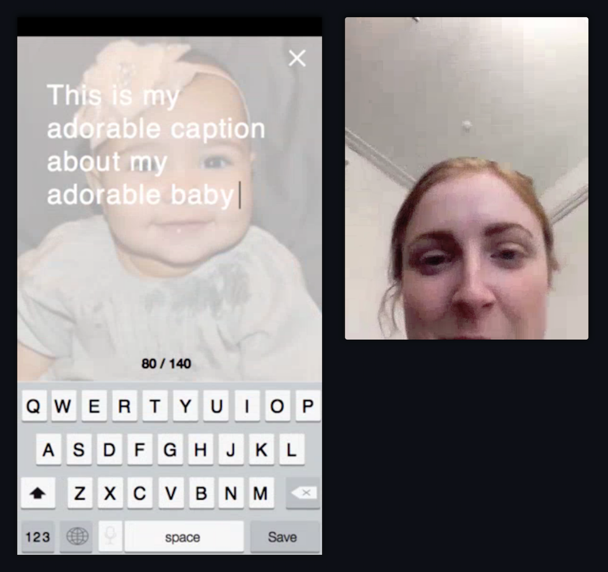
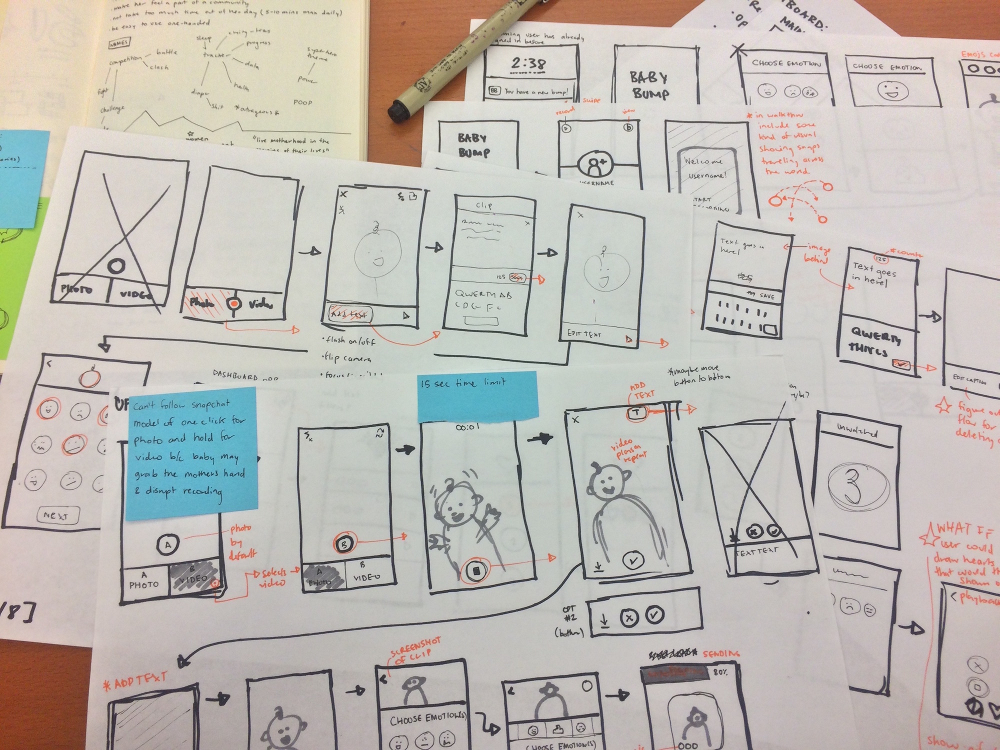
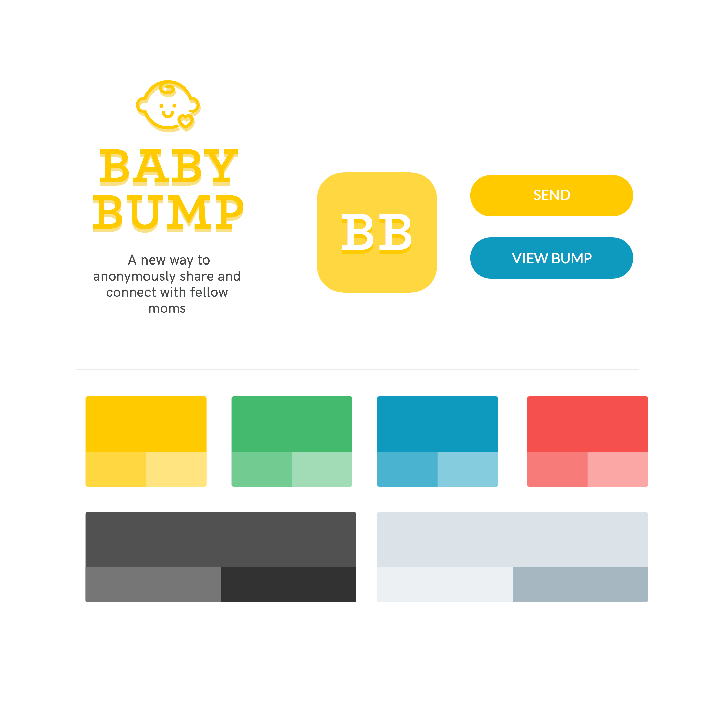

Celebrating fifty years of computer science
NCSU CSC Generative Logo
Date
August 2015
Project Details
Branding
Team
Allison Press + Lisa Wong
[1] The Logo
The power of computer science lies beyond the flat pixels of a computer screen. It's a field that has continued to evolve at a swift pace over the past 50 years. Our logo captures this spirit of moving forward, and the endless potential of the field.
Our "50" logo references the flat pixels of a computer screen, while also symbolizing the depth and unseen power of the field. It pushes out of space and moves forward. The use of contrasting gradients creates an optical illusion in which the 50 appears to move in several directions - referencing a love for puzzles and problem-solving in State's computer science students.
Key Problem & Resulting Objective
The Problem: It's no surpose that being a teen mom is hard. Aside from complaints about changing diapers and organizing playdates, the main problem was loneliness. Often the only teen mom in her school, she felt that they none of her local friends/family truly understood the experiences she had to go through. Design Objective: To design an app that would allow teen moms to share both the joys and hardships of young motherhood in a judgement-free, fun way.
Needs from Design
- Needs to blend seamlesly into current daily routine
- Needs to be easy to update and interact with
- No complicated sign-up process or required commitment
Wants from Design
- Wants to share memories of her baby with other mothers who care
- Wants to feel like there are other young moms in her same situation
[1.1] User Testing
The format of our app, initially dubbed "Babybump" takes elements from Snapchat and Facebook’s Slingshot applications which allow users to send and receive photos that are only viewable for a temporary amount of time. These applications are wildly popular among modern teenagers so we felt that this format of fast, no-pressure sharing would be the best way to encourage teen moms to reach out to one another.
-

- 
With the wonderful Invision and Lookback applications we were able to user test this initial app concept and receive instant feedback on what was going right and what was just plain wrong.
Positive Feedback
Almost all users were able to complete the first taskflow (capturing a photo and sending it off) without any trouble. Once they viewed the incoming “bump” with a new baby picture, all the users cracked a smile and found the emoji tagging system entertaining. In post-interviews users commented that at the emoji tagging feature was one of the most attractive features of the application
Negative Feedback
Many of the mothers did not fully understand our 1:1 sending concept. Users are more familiar with the flow of sending messages to a particular user and then receiving a direct reply so we faced a hurtle in trying to convey this. In contrast to traditional systems, images sent through the app would be saved in a database and organized by emoji tag. Therefore when I mom has sent an app she then receives the “opportunity” to view another snap, and is presented with three different emoji icons. When she selects an emoji, the database pulls down a randomized image tagged with that emoji to present to the user.

- 


[2] Branding
At this stage my team divided to work on individaul user interface proposals. Looking at a lot of other user interfaces in this space, there was a common theme of bright fun colors and bubbly type. I went with these themes but soon realized that teens don't need another cuddly app like the ones that track diapers. The branding needed to be playful but not too childish.
- 

FINAL BRAND
The Solution Decided to go with a more angled approach that complemented the GT Sectra font, which I am just so in love with.
Fonts & Colors
- Headers: GT Sectra Display Bold
- Sub-Headers: HK Grotesk Bold
- Body: HK Grotesk Regular
- #44b86c
- #11adb8
- #ffca00